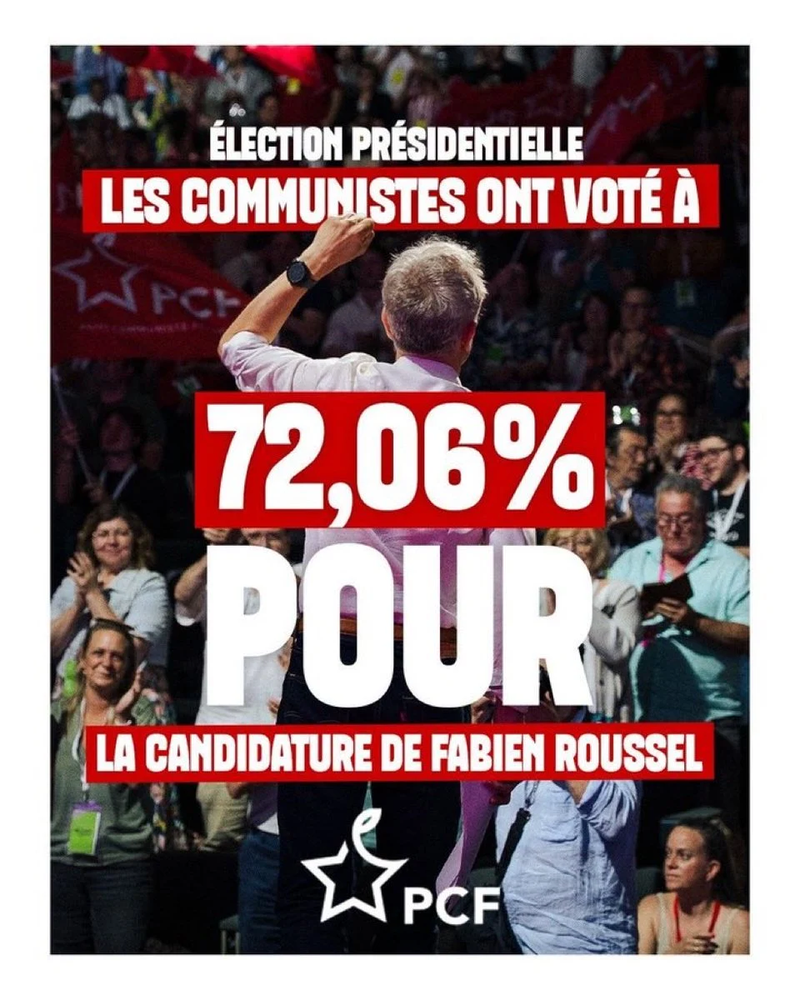

Réponse sur X
Le vote des communistes en image
Date de publication sur X · 7 septembre 2026
Repères éditoriaux
La réponse republie le visuel annonçant les résultats du vote sur la candidature de Fabien Roussel.
Texte de la publication sur X
@YannickBone @Fabien_Roussel La démocratie vous connaissez pas. https://t.co/jSveEONDzE

Sources
PCF 79 · @79Parti sur X · AR-0005-TW-2096927398604210522
À lire aussi · Une vidéo du PCF national relayée le 4 mars 2021
Publications associées
- Présidentielle 2027. Les communistes désignent Fabien Roussel · Annonce des résultats du vote